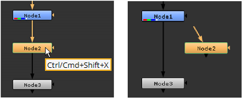
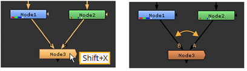

大多数节点都有输入和输出连接器，用于建立计算操作的顺序。
|
|
|
节点上的连接器。 |
将节点插入节点图后，请尝试以下方法连接节点:
• 将输入或输出连接器拖到另一个节点上以建立连接。
• 选择一个节点，按 转变 键入并选择第二个节点。然后按 Y 将第一个节点连接到第二个节点的输出。
• 选择一个节点，按 转变 键入并选择第二个节点。然后按 转变 Y 将第二个节点连接到第一个节点的输出。

• 选择一个节点并按 Ctrl/Cmd Shift X 从树中提取选定节点。

• 对于有两个输入的节点，选择该节点并按 移动 X 交换 A/B 输入。

• 将遮罩连接器拖动到提供要用作选定节点遮罩的图像的节点。
|
|